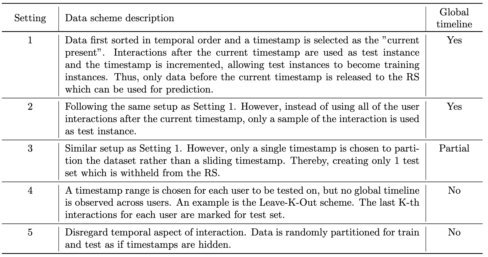
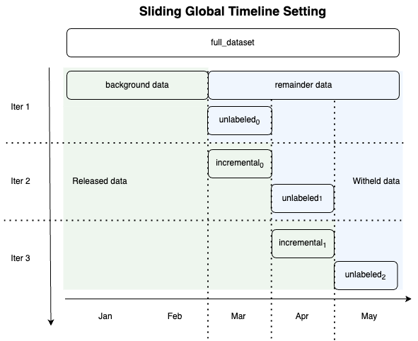

streamsightv2.settings
Setting
The setting module contains classes that define how the data is split. To generalize the splitting of the data, the interactions are first sorted in temporal order, and then the split is performed based on the setting. As this library only considers dataset with timestamp, we will consider the case of the single time point setting and the sliding window setting. The single time point setting is analogous to Setting 3 of [Sun23]. The sliding window setting is analogous to Setting 1 of [Sun23].
{kind=link}
Observe the diagram below where the data split for Setting 1 is shown below. The unlabeled data will contain interactions that are masked which occurs after the current timestamp. The ground truth data will contain the actual interactions which will be used for evaluation and then released to the algorithm.
{kind=link}
While the this setting allows us to test the algorithm in a real-world scenario, there are times when the algorithm might require some sequential data before a prediction can be made. While it is not the role of the evaluating platform to provide this data, we have included the option to provide the last n interactions
background_data: Data that is used to train the algorithm before the first split.
unlabeled_data: Data that is released to the algorithm for prediction. Contains the ID to be predicted and is labeled with “-1”. Timestamps of the interactions to be predicted are preserved. Can contain the last n interactions split if specified in the parameter. The purpose is to provide sequential data to the algorithm.
ground_truth_data: Data that is used to evaluate the algorithm. This data will contain the actual interactions. The unlabeled data with the masked data is a subset of the ground truth to ensure that there is an actual corresponding value to evaluate the prediction against.
|
Base class for defining an evaluation setting. |
|
Single time point setting for data split. |
|
Sliding window setting for splitting data. |
A setting is stateful. Thus, the initialization of the setting object only stores
the parameters that are passed. Calling of Setting.split is necessary
such that the attributes Setting.background_data, Setting.unlabeled_data
and Setting.ground_truth_data are populated.
Example
If the file specified does not exist, the dataset is downloaded and written into this file. Subsequent loading of the dataset will not require downloading the dataset again, and will be obtained from the file in the directory.
from streamsightv2.datasets import AmazonMovieDataset
from streamsightv2.settings import SlidingWindowSetting
dataset = AmazonMovieDataset(use_default_filters=False)
data = dataset.load()
setting_sliding = SlidingWindowSetting(
background_t=1530000000,
window_size=60 * 60 * 24 * 30, # day times N
n_seq_data=1,
top_K=k
)
setting_sliding.split(data)
Splitters
Splitters are stateless and can be reused across different settings. The role of
the splitter is to split the data into two parts. That is past_interaction
and future_interaction. The naming is chosen such that data returned is
easily understood as dataset being dealt with will always contain timestamps as
in our assumption for this project.
Implementation of other settings is possible by implementing new splitters to define the split such that there is no need to redefine the entire architecture of the setting.
For eg. the sliding window setting can be implemented by using a splitter that may split using a different or additional criteria other than timestamp. The programmer instead of redefining the entire setting can just implement a new splitter and reuse the existing setting.
|
Splits data by timestamp. |
|
Splits with n past interactions based on a timestamp. |
Processor
The processor module contains classes that are used to process the data. In the current implementation, the processor is used to mask the data that is to be predicted and inject it into the unlabeled data. The programmer may define other processor that is required to do any further processing of the data for the data created in the setting.
Base class for processing data. |
|
Injects the user ID to indicate ID for prediction. |
Exception
The exception class EOWSetting is used to raise an exception when the
end of window is reached. Note that this exception is declared the base file.
|
End of Window Setting Exception. |